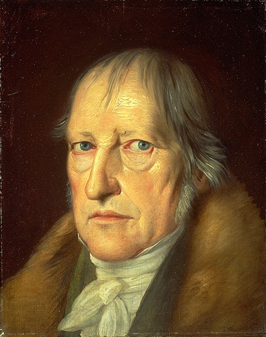
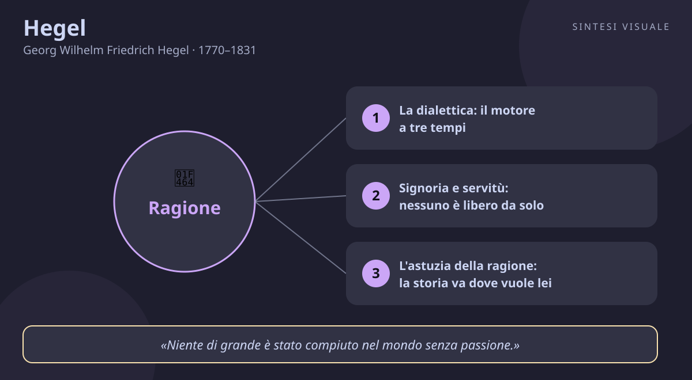

Hegel
Georg Wilhelm Friedrich Hegel · 1770–1831
«Ciò che è razionale è reale; e ciò che è reale è razionale»
- Dialettica
- Spirito
- Stato
- Storia
💬La massima
«Ciò che è razionale è reale; e ciò che è reale è razionale.»
— G.W.F. Hegel, Lineamenti di filosofia del diritto, Prefazione. Il volume uscì nel 1821, con prefazione datata giugno 1820. In originale tedesco: «Was vernünftig ist, das ist wirklich; und was wirklich ist, das ist vernünftig.»
Spiegazione. Pensa a una ghianda: dentro c'è già, in forma concentrata, l'intero programma della quercia — radici, tronco, fronde. La ghianda è «razionale» perché segue una logica interna, e diventa «reale» quando quella logica si dispiega davvero nel mondo, anno dopo anno. Così ragiona Hegel: la ragione non è un bel sogno che sta per aria, e il mondo non è un caos insensato. Le due facce si appartengono. Quando un'idea è davvero razionale — una legge giusta, un'istituzione ben pensata, un progetto solido — preme per realizzarsi e prima o poi ce la fa; e quando qualcosa dura davvero nella storia — una lingua, uno Stato, una tradizione — state pur certi che dentro nasconde una logica, anche se a prima vista non si vede.
Il punto sottile. Attenzione al tranello, quello in cui caddero già i contemporanei: Hegel non dice che «tutto ciò che esiste va bene così». Distingue con cura il reale (in tedesco wirklich, da wirken, agire: ciò che opera ed è efficace) dal semplice esistente: un'ingiustizia può esistere, ma se contraddice la ragione non è «reale» in senso pieno — è destinata a cadere, come un muro storto. La frase va letta nei due sensi insieme: se hai un ideale razionale, non tenerlo in tasca come un lamento — lavora perché diventi realtà; se vedi una realtà che dura, prima di condannarla o di celebrarla cerca di capirne la logica interna. È insieme una promessa e un metodo: niente utopie senza mani, niente fatti senza pensiero.
Perché conta oggi. Viviamo stretti tra due estremi hegeliani al contrario: il cinismo («tanto non ha senso niente, il mondo va così») e il moralismo astratto («il mondo dovrebbe essere diverso, punto»). Hegel taglia in mezzo: il mondo ha una logica, ma va capita prima di cambiarla; e gli ideali contano, ma solo se trovano la strada per incarnarsi. Chi protesta senza studiare il meccanismo che vuole cambiare predica al vento; chi si adatta a tutto «perché è così» ha dimenticato che la realtà è opera umana e si può rifare. La domanda hegeliana da portare a casa è doppia: questa cosa che esiste, che logica nasconde? E questa idea che difendo, come diventa realtà?
👤Biografia
Georg Wilhelm Friedrich Hegel nacque il 27 agosto 1770 a Stoccarda, nel ducato di Württemberg, figlio di un funzionario statale: famiglia borghese, ordinata, protestante. Ragazzo metodico e divoratore di libri — da adolescente ricopiava interi passi dei giornali sul suo diario — a diciotto anni entrò come borsista al Tübinger Stift, il seminario protestante di Tubinga, per studiare teologia. Lì divise la stanza con due coetanei destinati alla gloria: il poeta Friedrich Hölderlin e il filosofo Friedrich Schelling. I tre, si racconta, piantarono insieme un albero della libertà per la Rivoluzione francese: il giovane Hegel era un entusiasta del 1789.
Gli anni da precettore e la svolta di Jena. Laureato ma senza vocazione pastorale, Hegel fece per anni il precettore privato — a Berna e poi a Francoforte — studiando in solitudine economia, storia e religione mentre l'amico Schelling diventava celebre. La svolta arrivò nel 1801 a Jena, allora il laboratorio della filosofia tedesca: libero docente non stipendiato, scrisse e litigò, si avvicinò e poi ruppe con Schelling. Nella notte tra il 13 e il 14 ottobre 1806, mentre Napoleone entrava a Jena alla vigilia della battaglia, Hegel finì di correggere le bozze del suo primo capolavoro, la Fenomenologia dello spirito, e in una celebre lettera all'amico Niethammer descrisse l'imperatore visto per strada come «l'anima del mondo a cavallo». Il giorno dopo l'università chiuse e lui restò senza impiego, con un figlio illegittimo appena nato e le tasche vuote.
Il professore. Fece il redattore di un giornale a Bamberga, poi per otto anni (1808-1816) diresse il ginnasio di Norimberga, dove scrisse la monumentale Scienza della logica. Nel 1816 ottenne la cattedra a Heidelberg, nel 1818 la chiamata più prestigiosa della Germania: l'università di Berlino, capitale della Prussia. Lì divenne il filosofo ufficiale del regno — le sue lezioni, tenute con voce roca e periodi lunghissimi, attiravano studenti da tutta Europa. Sposò Marie von Tucher, ebbe due figli, amava il vino, le carte e le lunghe discussioni con gli amici. Morì quasi all'improvviso il 14 novembre 1831, a sessantun anni, durante un'epidemia di colera: fu sepolto a Berlino accanto a Fichte, l'altro grande idealista.
📌Sintesi del pensiero
La realtà non è un mucchio di cose ferme, ma un unico grande processo in cui la Ragione — che Hegel chiama anche Idea o Spirito — si sviluppa attraverso contraddizioni e le supera conservandole: ogni figura del pensiero e della storia nasce, entra in conflitto col suo opposto e si ricompone a un livello più alto. Conoscere significa ripercorrere questo movimento, dalla coscienza individuale fino allo Stato e alla storia universale, dove la libertà degli uomini si realizza in istituzioni concrete. La filosofia arriva sempre per ultima, come la nottola di Minerva al crepuscolo: comprende il proprio tempo, non lo inventa.
- Logica e metodo: la dialettica come sviluppo per negazioni determinate, l'Aufhebung (togliere-conservare-elevare), il vero come intero e come processo.
- Spirito e storia: signoria e servitù, riconoscimento, astuzia della ragione, storia come sviluppo della coscienza della libertà.
- Eticità e Assoluto: famiglia, società civile e Stato; arte, religione e filosofia come sapere supremo dello Spirito.
🏛️I temi fondamentali
- La dialettica: il motore a tre tempi. Ogni cosa viva, per Hegel, si muove così: prima è qualcosa di immediato (il seme), poi si nega e si oppone a sé (il seme marcisce, spunta la pianta che non assomiglia al seme), infine ritorna a sé arricchita (la pianta fa nuovi semi, e il ciclo è compiuto a un livello più alto). La parola magica è Aufhebung, che in tedesco vuol dire insieme togliere, conservare ed elevare: la pianta «toglie» il seme ma ne «conserva» il programma e lo «eleva» a vita nuova. Nota per i precisi: il famoso schema tesi-antitesi-sintesi Hegel non lo usò quasi mai — lo resero celebre i manuali dopo di lui. Lui parlava di momento astratto, negativo e speculativo. Esempio concreto: un'azienda che passa dal negozio sotto casa (immediato) alla crisi portata dall'e-commerce (negazione) e rinasce con negozio più vendita online integrata (superamento che conserva entrambi) ha fatto dialettica senza saperlo.
- Signoria e servitù: nessuno è libero da solo. Nel capitolo più famoso della Fenomenologia, due coscienze si scontrano perché ciascuna vuole essere riconosciuta dall'altra senza riconoscerla: chi preferisce la vita alla libertà diventa servo, chi rischia la vita diventa signore. Ma ecco il colpo di scena: il signore, che non lavora e gode soltanto, dipende in tutto dal servo — mentre il servo, lavorando la materia e trasformando il mondo, scopre la propria indipendenza e la propria intelligenza. Il padrone si impigrisce, il servo cresce. Esempio concreto: il capo che non sa fare nulla senza la segretaria «è il padrone», ma la vera padrona della situazione è lei — e quando cambia ufficio, lui è perduto. La morale hegeliana è profonda: l'identità — essere qualcuno — non ce la diamo da soli allo specchio, ce la dà lo sguardo degli altri; senza riconoscimento reciproco non c'è libertà per nessuno.
- L'astuzia della ragione: la storia va dove vuole lei. Gli uomini agiscono per i loro fini — ambizione, interesse, amore, avidità — eppure dalla somma delle loro azioni esce qualcosa che nessuno aveva progettato: le grandi svolte della storia. Hegel la chiama astuzia della ragione: la Ragione usa le passioni umane come carburante per i propri scopi, come un cavaliere che lascia correre il cavallo dove vuole lui tenendo salde le redini. Cesare voleva il potere personale e finì per fondare l'impero; i mercanti cercavano profitto e costruirono il mondo moderno. Nessun complotto, nessuna provvidenza con la barba: solo il fatto che le azioni umane, intrecciandosi, producono un senso più grande delle intenzioni. Esempio concreto: nessuno ha «deciso» lo smartphone come forma di vita — milioni di persone cercavano ognuna il proprio tornaconto e ne è uscita una rivoluzione che ha cambiato il lavoro, l'amore e la politica.
- Lo Stato come libertà concreta: oltre l'io e il mercato. Per Hegel essere liberi non vuol dire «fare quello che mi pare»: un desiderio isolato è schiavitù, non libertà. Si è liberi quando si vive in istituzioni razionali che si riconoscono come proprie: la famiglia (l'amore), la società civile (il lavoro, il mercato, le associazioni, i tribunali) e sopra tutto lo Stato, che compone gli interessi particolari nell'interesse universale. Lo Stato hegeliano non è il poliziotto né il tiranno: è il luogo in cui il singolo trova la propria libertà garantita dalle leggi — come il musicista è libero proprio perché esiste la partitura. Esempio concreto: pagare le tasse sembra una costrizione, ma senza quelle tasse non ci sarebbero strade, scuole e ospedali — cioè le condizioni stesse che rendono possibile la tua libertà di muoverti, studiare e curarti.
- Lo Spirito assoluto: arte, religione, filosofia. In cima al sistema stanno i tre modi in cui lo Spirito — l'umanità nella sua autocoscienza — comprende sé stesso. L'arte lo fa con le immagini sensibili (una statua greca mostra il divino in forma umana), la religione con la rappresentazione e la fede (le storie sacre dicono la verità per racconti), la filosofia con il concetto puro (dice la stessa verità in forma pensata). Nessuna delle tre è «falsa»: sono tre linguaggi dello stesso contenuto, e la filosofia è il più alto perché sa rendere ragione di tutto, comprese arte e religione. Esempio concreto: davanti a una tragedia greca piangi (arte), in chiesa preghi (religione), e quando poi rifletti su perché il destino di Antigone ti commuove stai facendo — senza saperlo — il passo dalla rappresentazione al concetto.
📚Le opere principali
- Fenomenologia dello spirito (1807). Il romanzo di formazione della coscienza: dalla certezza sensibile alla ragione, fino al sapere assoluto, passando per signoria e servitù e per la «coscienza infelice». Tesi centrale: la verità non è una cosa trovata per terra, ma il percorso con cui la coscienza fa esperienza di sé e si eleva. Conta perché è il libro più letto e più vivo di Hegel — qui stanno le pagine sul riconoscimento che ancora oggi nutrono psicologia, politica e femminismo.
- Scienza della logica (1812-1816). Il cuore più arduo del sistema, scritto negli anni di Norimberga: le categorie del pensiero (essere, essenza, concetto) dedotte una dall'altra per movimento dialettico. Tesi centrale: le forme del pensiero sono insieme le forme della realtà — logica e metafisica coincidono. Conta perché è la «grammatica» di tutto Hegel: difficile, ma chi la attraversa possiede la chiave di ogni altra sua pagina.
- Enciclopedia delle scienze filosofiche (1817). Il sistema intero in compendio, scritto per gli studenti di Heidelberg: logica, filosofia della natura, filosofia dello spirito. Tesi centrale: tutto il reale si lascia ordinare come sviluppo dello Spirito dalla natura alla cultura. Conta perché fu il manuale su cui si formarono generazioni di hegeliani — e il testo che ancora oggi si usa per orientarsi nel suo pensiero.
- Lineamenti di filosofia del diritto (1821). Diritto astratto, moralità ed eticità (famiglia, società civile, Stato), con la celebre prefazione sul razionale e il reale. Tesi centrale: la libertà si realizza in istituzioni razionali, e lo Stato è la sua forma compiuta. Conta perché è il testamento politico di Hegel: da qui discendono insieme la teoria liberale dello Stato di diritto e la critica di Marx, che la rovescerà.
💬Massime celebri
«Il vero è l'intero.» — Fenomenologia dello spirito, Prefazione (1807). In tedesco: «Das Wahre ist das Ganze.» Conta perché è il programma di tutto Hegel in cinque parole: nessuna verità parziale basta a sé stessa — ogni cosa si capisce solo nel suo sviluppo completo e nelle sue relazioni. Il vaccino contro gli slogan.
«La nottola di Minerva inizia il suo volo soltanto sul far del crepuscolo.» — Lineamenti di filosofia del diritto, Prefazione (1821). In tedesco: «die Eule der Minerva beginnt erst mit der einbrechenden Dämmerung ihren Flug.» Conta perché dice con un'immagine indimenticabile che la filosofia comprende il mondo sempre dopo che è accaduto — come il gufo della dea che vola a sera: saggezza contro la fretta di sentenziare sul presente.
«Niente di grande è stato compiuto nel mondo senza passione.» — Lezioni sulla filosofia della storia (tenute negli anni Venti, pubblicate postume). In tedesco: «nichts Großes in der Welt ohne Leidenschaft vollbracht worden ist.» Conta perché corregge il ritratto di Hegel come freddo razionalista: la ragione ha bisogno del carburante delle passioni — senza desiderio, entusiasmo e perfino ambizione, nessuna idea diventa realtà.
⌛Contesto storico
- Hegel nacque nel 1770 nel ducato di Württemberg, uno dei trecento staterelli del morente Sacro Romano Impero: un mondo di principi, corporazioni e Chiese, senza stampa libera né diritti moderni. Aveva diciannove anni quando scoppiò la Rivoluzione francese (1789): con Hölderlin e Schelling festeggiò la caduta della Bastiglia come l'alba della ragione nel mondo. Ma vide anche il Terrore, l'ascesa di Napoleone e — da professore a Jena nel 1806 — le armate francesi marciare sotto le sue finestre: l'entusiasmo giovanile si fece pensiero maturo sulla violenza della libertà astratta.
- La sua vita adulta coincide con le guerre napoleoniche, il crollo dell'Impero (1806), il Congresso di Vienna (1815) e la Restaurazione: mentre Metternich rimetteva i re sui troni e i decreti di Karlsbad (1819) imbavagliavano università e giornali, Hegel costruiva a Berlino un sistema in cui lo Stato prussiano — riformato da Stein e Hardenberg, con esercito moderno, burocrazia e università — appariva come la forma più avanzata della libertà. Era insieme un conservatore dell'ordine e un figlio della Rivoluzione: difendeva lo Stato ma fondava tutto sulla ragione, che resta sempre libera di giudicarlo.
- Intorno a lui la Germania viveva la sua età dell'oro culturale: Goethe e Schiller a Weimar, il Romanticismo dei fratelli Schlegel, Beethoven che componeva le sinfonie, e intanto in Inghilterra la rivoluzione industriale cambiava il lavoro e le città. La società tedesca era ancora contadina e corporativa, ma borghesi colti, funzionari e professori formavano un'opinione pubblica nuova fatta di libri, riviste e salotti: Hegel ne fu il re filosofo.
- Da chi è stato influenzato Eraclito e Aristotele tra gli antichi (il divenire e la logica); Spinoza, per l'idea dell'unica Sostanza; Kant, che pose il problema (come unire ragione e mondo); Fichte e soprattutto Schelling, compagni e rivali dell'idealismo; i Greci e il cristianesimo come figure storiche dello Spirito; e la Rivoluzione francese come esperienza generazionale.
- A chi ha trasmesso alla Destra e alla Sinistra hegeliana (conservatori contro radicali); a Karl Marx, che ne rovesciò la dialettica nella critica dell'economia; a Kierkegaard e all'esistenzialismo, nati contro il suo sistema; al pragmatismo americano e all'idealismo inglese; alla Scuola di Francoforte e a Kojève, che lo riportò in Francia; fino al comunitarismo di Taylor e alla rinascita analitica (Brandom, McDowell), che ne riscoprono la teoria del riconoscimento.
🌊L'eredità
- Il primo erede fu il più infedele e il più grande: Karl Marx, giovane hegeliano di sinistra, prese la dialettica e la «mise a camminare sui piedi», sostituendo lo Spirito con il lavoro e l'economia — senza Hegel non esisterebbe il materialismo storico. Sull'altro fronte, Søren Kierkegaard si ribellò proprio al Sistema: contro l'individuo dissolto nell'universale rivendicò il singolo, la scelta, il salto — e fondò l'esistenzialismo. Da questa doppia frattura nasce gran parte del Novecento: da una parte il marxismo in tutte le sue correnti, fino alla Scuola di Francoforte (Adorno, Horkheimer, Marcuse) che lesse la società industriale con categorie hegeliane; dall'altra l'esistenzialismo di Sartre e la fenomenologia, che della Fenomenologia portano il nome stesso.
- Nel secondo Novecento Hegel è risorto due volte: in Francia, dove Kojève con le sue lezioni su signoria e servitù contagiò Sartre, Lacan e tutta la teoria successiva, e dove Fukuyama profetizzò — a torto o a ragione — la «fine della storia»; nel mondo anglosassone, dove filosofi analitici come Brandom e McDowell hanno riscoperto in Hegel il pensatore del riconoscimento e delle pratiche sociali, e il comunitarista Charles Taylor ne ha fatto il padre di ogni critica dell'individualismo. Oggi, quando si parla di lotta per il riconoscimento — delle donne, delle minoranze, delle nazioni — si parla hegeliano, spesso senza saperlo.
🌍Esempi di oggi
- Il vicino che «è fatto così». Hai un collega che risponde sempre male, e l'hai archiviato come «caratteraccio». Poi scopri per caso la sua logica interna: è sotto pressione perché assiste il padre malato e teme di perdere il posto. Non è diventato simpatico all'improvviso, ma ora ne capisci la grammatica — e sai dove intervenire. È la prima metà della massima: dietro il reale che dura c'è quasi sempre una ragione, e capirla è più utile che condannarla.
- La protesta che studia il meccanismo. Un comitato di quartiere vuole salvare il parco dal parcheggio: invece di limitarsi agli slogan, studia il piano regolatore, i bilanci del Comune, le carte dell'appalto — e trova il punto debole legale che blocca il progetto. È la seconda metà della massima: l'ideale razionale (il verde pubblico) diventa reale solo incarnandosi nei meccanismi concreti. Moralismo astratto perde, ragione organizzata vince.
- La promozione mancata come negazione. Non ottieni l'aumento che aspettavi: prima reazione, crollo («non valgo niente») o rabbia («sono tutti ingiusti»). La mossa hegeliana è la terza: tratta la bocciatura come negazione da superare conservando — chiedi un feedback preciso, capisci cosa manca davvero, costruisci un piano di sei mesi. Tra un anno, guardandoti indietro, quella sconfitta apparirà come il momento in cui sei cresciuto: tolta come umiliazione, conservata come lezione, elevata a competenza.
📄Georg Wilhelm Friedrich Hegel (1770–1831), il professore di Berlino che fece della contraddizione il motore del mondo
Ritratto (Jakob Schlesinger, ritratto di Hegel del 1831, Alte Nationalgalerie di Berlino — pubblico dominio, Wikimedia Commons):
🧠Quiz
Rispondi in chat con la lettera di ogni risposta, es. 1C 2B 3B 4A 5D. Oppure copia e rispondi così: «Quiz Hegel: 1C 2B 3B 4A 5D» (usa - per le risposte che salti).
1 Cosa significa davvero «ciò che è razionale è reale; e ciò che è reale è razionale»?
2 Come funziona la dialettica hegeliana (l'Aufhebung)?
3 Cosa insegna la dialettica di signoria e servitù?
4 Cos'è l'«astuzia della ragione» nella storia?
5 Quale episodio segna davvero la vita di Hegel?
✅Soluzioni — tocca per vedere
1C – 2B – 3B – 4D – 5B
🔁Ripasso
- Razionale e reale: se sbagli la 1, ricorda la ghianda e la quercia — «reale» (wirklich) non vuol dire tutto ciò che esiste, ma ciò che opera realizzando la propria logica; e un ideale razionale conta solo se trova la strada per incarnarsi.
- Dialettica e riconoscimento: se sbagli la 2 o la 3, fissa il verbo in tre tempi togliere-conservare-elevare (la pianta col seme, l'azienda col negozio online) e la legge del riconoscimento: l'identità ce la dà lo sguardo degli altri, il padrone ozioso decade e chi lavora cresce.
- Storia e vita: se sbagli la 4 o la 5, pensa al cavaliere che tiene le redini mentre il cavallo corre (le passioni portano dove la ragione vuole) e alle date-chiave: 1806 Jena e Napoleone, 1807 la Fenomenologia, 1818 Berlino, 1821 i Lineamenti, 1831 il colera.
🖼️In un colpo d’occhio

Tocca l’immagine per ingrandirla.